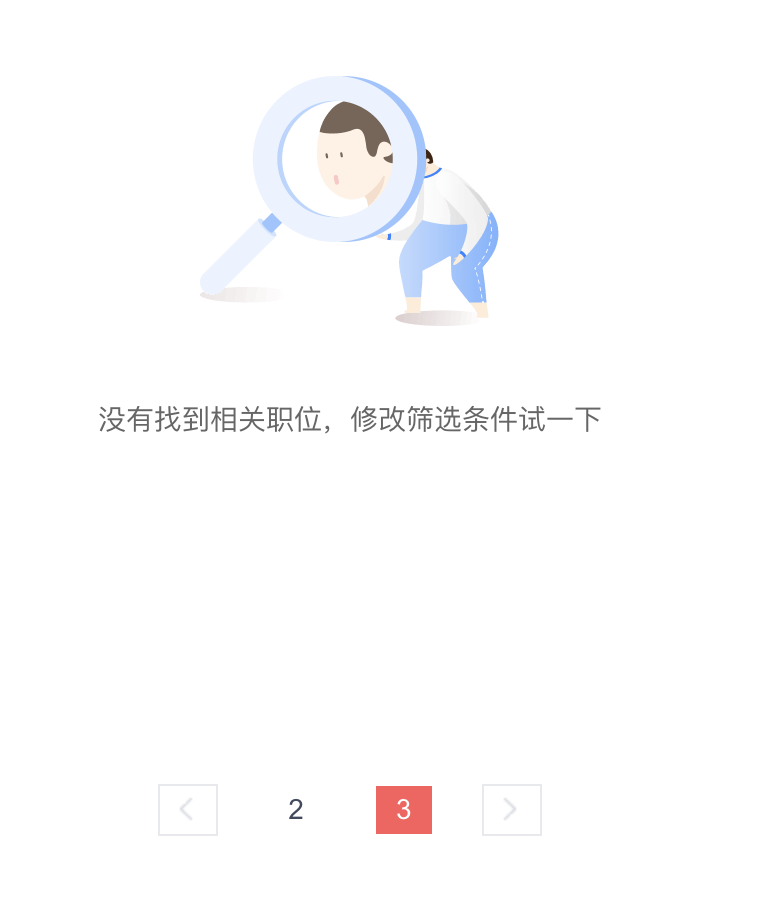

When to Stop
Scraping can get tricky when you don’t know when to stop. Some websites limit the results, while others seem endless but aren’t what they appear to be.
Here’s a summary of the job platforms we scraped:
Website |
Category |
Scraped |
Deduplicated |
Keyword filtered |
|---|---|---|---|---|
Boss直聘 |
hard limit |
300 |
289 |
289 |
51jobs（前途无忧） |
“infinite” pages |
1700 |
970 |
250 |
58jobs（58同城） |
“infinite” pages |
7500 |
55 |
55 |
Dianzhang（店长直聘） |
Link invalid |
34 |
33 |
33 |
Yupao（鱼泡直聘） |
no limit but stricter in scraping |
108 |
97 |
97 |
Ganji（赶集直招） |
multiple job listing for one company |
508 |
494 |
181(Company) |
Hard Limit
Some websites only show a fixed number of results, no matter how much data exists.
For example, Boss Zhipin only lets you see the first 300 job listings for any search. Even if you log in, that’s all you get—same for your scraper.
APIs also have rate limits, meaning they only allow a certain number of requests per minute, day, or even month before blocking access to the same API key.
“Infinite” pages
Ever noticed how some job sites let you keep clicking “next” forever?
Take 51jobs (前程无忧) and 58jobs (58同城)—they seem to have endless pages of job listings. But do they really have more jobs than Boss Zhipin? Not quite.
These sites inflate their numbers to look full of opportunities. They duplicate listings or mix in irrelevant results to make it seem like there’s a ton of data.
For example, when searching “普工 + 北京”:
58jobs: Scraped 1000+ listings, but only 55 were unique.
51jobs: Scraped 1700 listings, and 970 are unique. But after filtering for Beijing, only 250 unique results remained.
So even if a site looks like it has endless jobs, most of them aren’t useful.
Link Invalid
Some sites use misleading pagination tricks.
Take Dianzhang, another job site. If you try scraping by manually changing the page number in the URL, you’ll get “Data not found” after page 3. That’s fair—it probably doesn’t have more jobs.

BUT… if you click “Next” as a normal user, the site doesn’t show an error. Instead, it sneakily redirects you to a general job search to make it seem like there’s still more data.